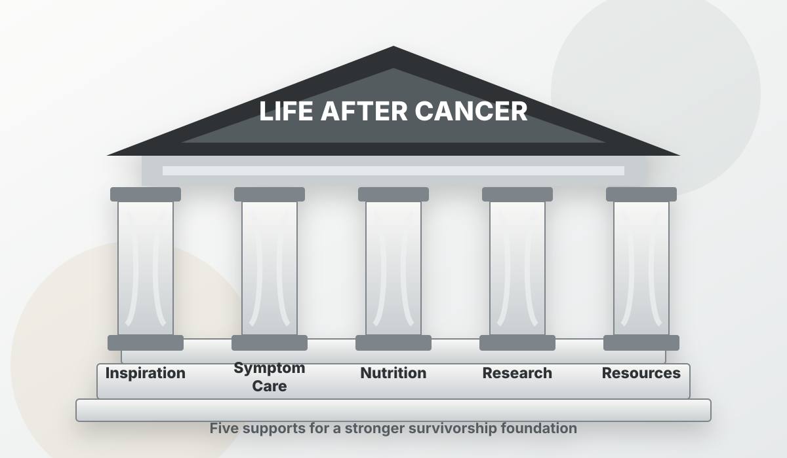

Inspiration
Surviving cancer can bring relief and uncertainty at the same time. This pillar focuses on honest hope: meaningful routines, family connection, spiritual or personal grounding, and small wins that make the next step feel possible.
Cancer Coach USA framework
A calm structure for the practical, emotional, and informational work survivors and families face after active cancer treatment.
Life after cancer
The pillars work together like a strong structure: each one supports the whole person, while the roof keeps the goal in view.

How the pillars help
The pillars are not a medical protocol. They are a coaching map for staying oriented, prepared, and connected while your clinicians guide medical follow-up.

Surviving cancer can bring relief and uncertainty at the same time. This pillar focuses on honest hope: meaningful routines, family connection, spiritual or personal grounding, and small wins that make the next step feel possible.
Track lingering symptoms, late effects, sleep, appetite, pain, mood, energy, cognition, and medication questions so follow-up appointments can become more specific and productive.
Support practical food planning around strength, energy, appetite, digestion, taste changes, weight changes, and nutrition guidance from clinicians.
Turn complex information into clearer questions about survivorship plans, scan reports, recurrence-risk concerns, terminology, reliable sources, and what to ask next.
Gather the practical supports survivors and families often need: follow-up tools, return-to-life planning, caregiver transitions, benefits questions, community support, and reliable education.
Start with one pillar
Cancer Coach USA can help organize survivorship needs without losing sight of the whole person and the people supporting them.